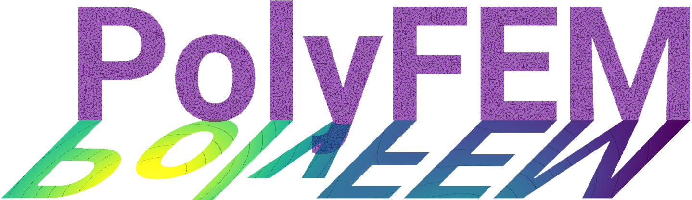

PolyFEM¶
A polyvalent C++ and Python FEM library.

PolyFEM is a simple C++ and Python finite element library. We provide a wide set of common PDEs including:
- Laplace
- Helmholtz
- Linear Elasticity
- St. Venant–Kirchhoff Elasticity
- Neo-Hookean Elasticity
- Stokes
- Navier–Stokes
PolyFEM simplicity lies in the interface: just pick a problem, select some boundary condition, and solve. No need to construct complicated function spaces, or learn a new scripting language: everything is set-up trough a JSON interface or through the Setting class in python.
For instance, PolyFEM seamlessly integrates quad/hexes and tri/tets of order up to 4, and integrates state-of-the-art techniques such as the adaptive \(p\)-refinement presented in “Decoupling Simulation Accuracy from Mesh Quality” or the spline and polygonal bases in “Poly-Spline Finite-Element Method”.
The library is actively used in our research so expect frequent updates, fixes, and new features!
News¶
- New “selection” interface to set boundary conditions and body ids.
- Added support for multi-material simulations.
- PolyFEM supports time-dependent fluid simulations!
- PolyFEM supports contacts using the IPC Toolkit.
- We support FEBio (*.feb) files.
- We finally extracted the solvers from PolyFEM. You can now use the wrappers independently, check the PolySolve repo.
- PolyFEM meshplot, igl and wildmeshing are presented at a Eurographics course.
- Bindings v0.5.2 with a new more pythonic interface, support for functions of the right-hand side and exact solution.
- PolyFEM is being used in biology! Check the paper or the project page!
- PolyFEM meshplot, igl and wildmeshing are presented at a SIGGRAPH course (07/30/2019).
- PolyFEM is now triangle and tetgen free. Stay tuned for the release of v0.5 in python with a new interface to high-order meshes and meshplot for the fast 3D plots!
- PolyFEM has been used in “A Large Scale Comparison of Tetrahedral and Hexahedral Elements for Finite Element Analysis”! Check the interactive plots!
- PolyFEM now supports high-order geometric maps! Check the SIGGRAPH paper “TriWild: Robust Triangulation with Curve Constraints” for more details!
- PolyFEM has a python interface!
- PolyFEM can do adaptive a priori \(p\)-refinement! Check the SIGGRAPH paper “Decoupling Simulation Accuracy from Mesh Quality” for more details!
PolyFEM in C++¶

For more details refer to the C++ section
Compilation¶
All the C++ dependencies required to build the code are included. It should work on Windows, macOS, and Linux, and it should build out-of-the-box with CMake:
mkdir build
cd build
cmake ..
make -j4
Usage¶
The main executable, ./PolyFEM_bin, can be called as a command-line interface. Simply run:
./PolyFEM_bin --help
PolyFEM in Python¶


For more details refer to the Python section
Installation¶
We are making efforts to provide a simple python interface to Polyfem.
For doing so, we are maintaining a conda package that can be easily installed https://anaconda.org/conda-forge/polyfempy.
conda install -c conda-forge polyfempy
Usage¶
Simply import the package!
import polyfempy
PolySolve¶
PolyFEM heavily depends on external libraries for solving linear systems. If you need a linear system wrapper based on Eigen (but do not need the finite element setup) you use PolySolve.
Citation¶
If you use PolyFEM in your project, please consider citing our work:
@misc{polyfem,
author = {Teseo Schneider and Jérémie Dumas and Xifeng Gao and Denis Zorin and Daniele Panozzo},
title = {{PolyFEM}},
howpublished = "\url{https://polyfem.github.io/}",
year = {2019},
}
@article{Schneider:2019:PFM,
author = {Schneider, Teseo and Dumas, J{\'e}r{\'e}mie and Gao, Xifeng and Botsch, Mario and Panozzo, Daniele and Zorin, Denis},
title = {Poly-Spline Finite-Element Method},
journal = {ACM Trans. Graph.},
volume = {38},
number = {3},
month = mar,
year = {2019},
url = {http://doi.acm.org/10.1145/3313797},
publisher = {ACM}
}
@article{Schneider:2018:DSA,
author = {Teseo Schneider and Yixin Hu and Jérémie Dumas and Xifeng Gao and Daniele Panozzo and Denis Zorin},
journal = {ACM Transactions on Graphics},
link = {},
month = {10},
number = {6},
publisher = {Association for Computing Machinery (ACM)},
title = {Decoupling Simulation Accuracy from Mesh Quality},
volume = {37},
year = {2018}
}
Acknowledgments & Funding¶
The software is being developed in the Geometric Computing Lab at NYU Courant Institute of Mathematical Sciences and the University of Victoria, Canada.
This work was partially supported by:
- the NSF CAREER award 1652515
- the NSF grant IIS-1320635
- the NSF grant DMS-1436591
- the NSF grant 1835712
- the SNSF grant P2TIP2_175859
- the NSERC grant RGPIN-2021-03707
- the NSERC grant DGECR-2021-00461
- Adobe Research
- nTopology
License¶
The code of PolyFEM itself is licensed under MIT License. However, please be mindful of third-party libraries which are used by PolyFEM and may be available under a different license.